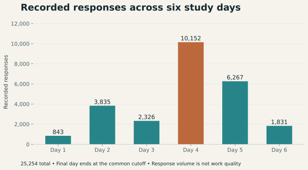
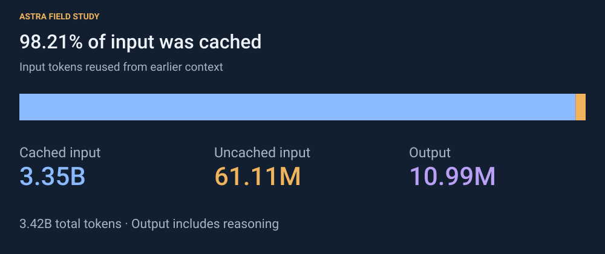
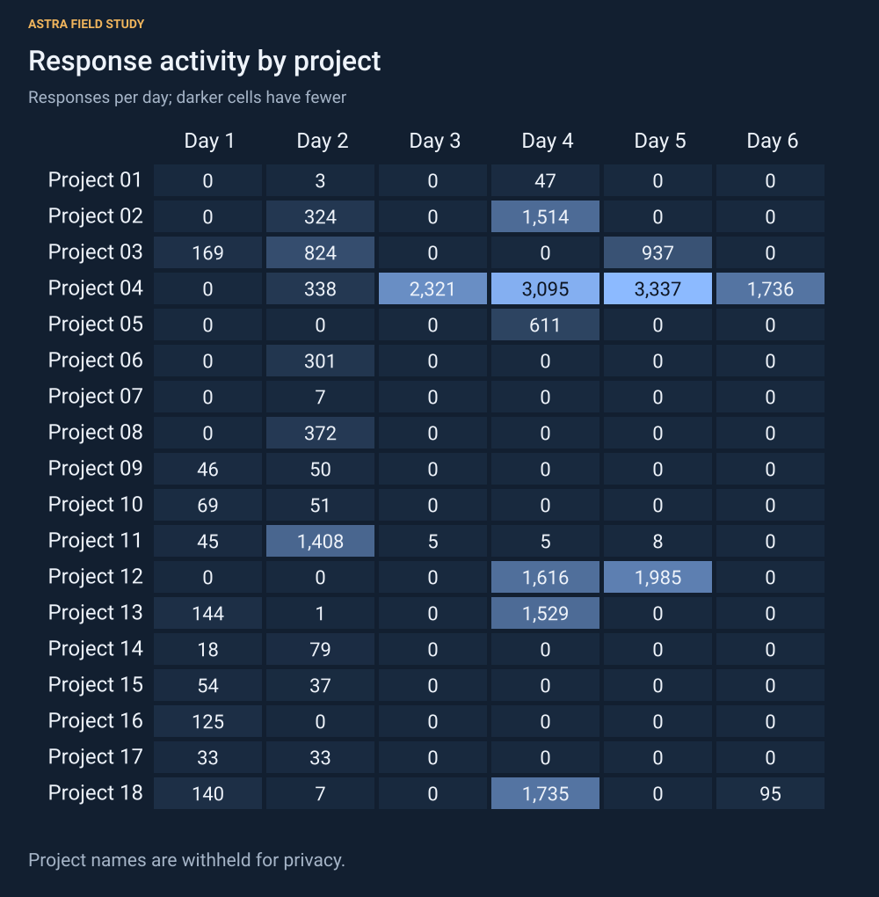
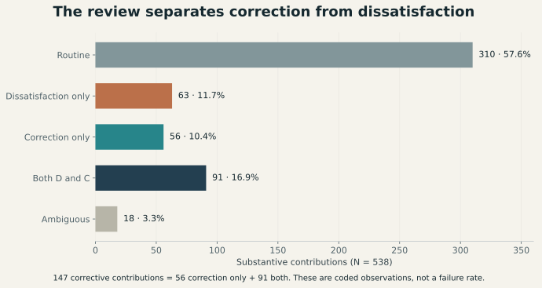
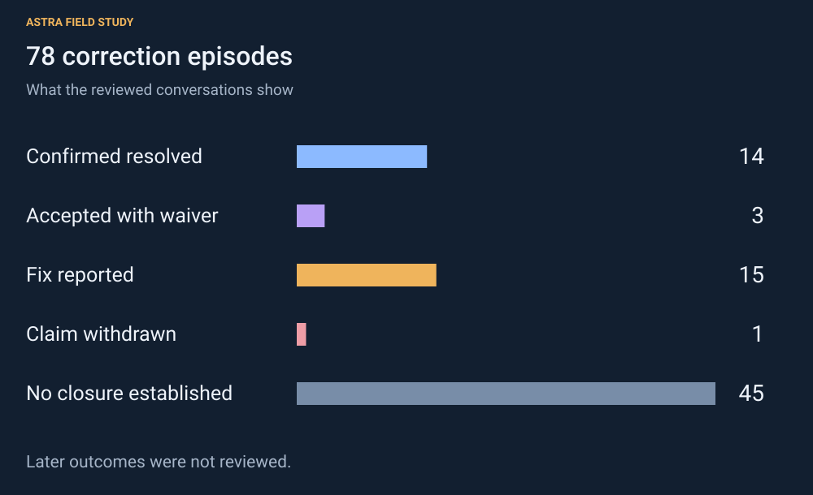
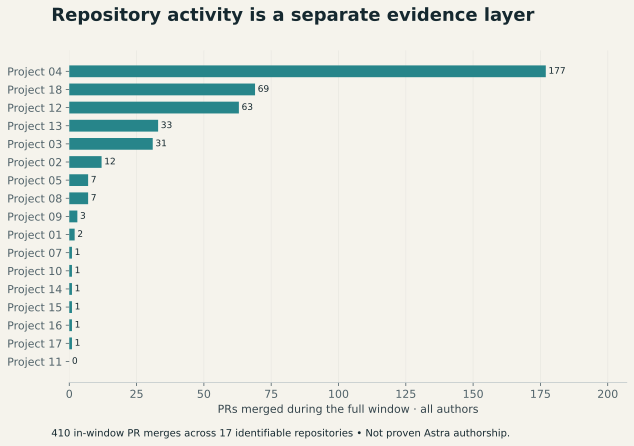

Six days of GPT-6 Astra: usage and corrective steering
Why I reviewed the work
The workflow I used with GPT-5.6 hasn't carried over reliably in my GPT-6 Astra testing. I've had to repeat instructions about testing, point back to supplied context, and ask for requested work missing from a completion handoff. I reviewed the retained records to describe the activity and the corrections involved.
The records cover six relative study days across two local stores. They contain 25,254 responses across 557 turns. A separate review of 538 substantive contributions identified 147 containing corrective steering, grouped into 78 episodes. Thirty-one episodes contained repeated corrections.
This study covers my usage only. I haven't run a matched GPT-5.6 comparison or an independent coding review.
The workflow I was using
My method gives tasks a defined scope, repository context, versioned standard operating procedures, verification criteria, and a clear handoff. I documented it before this review in the articles below.
Scroll the table horizontally for all columns.
| Published | Article | Relevant practice |
|---|---|---|
| June 13, 2026 | Codex-maxxing: treating Codex like an operating loop | Persistent workstreams, inspectable artifacts, verification before completion. |
| June 24, 2026 | The Best Codex Upgrade I Made Was Treating Repeated Work Like a Product | Prompt artifacts, preservation boundaries, retained decisions, stop conditions. |
| June 25, 2026 | The Useful Part of Agentic Auto-Scheduling is the Feedback Loop | External verification, result classification, bounded retries. |
| June 26, 2026 | Stop Asking Codex to do Magic. Build the Harness. | Task contracts, role boundaries, independent assignments and file ownership. |
| June 29, 2026 | Using Codex or OpenClaw? Put Your SOPs Where the History Lives. | Versioned standards, shared context, review and rollback; stale SOP risks. |
| July 1, 2026 | Before Businesses Use Codex, Decide What It Can Access | Access modes, task-specific privilege, configuration validation. |
Eric Provencher from OpenAI's Codex DX team described overlapping practices in Practical multi-agent orchestration in Codex, published July 24. His GPT-5.6 guidance covers distinct assignments, preserving constraints, bounding delegation, and choosing reasoning effort for the task.
What the records cover
The review uses two retained local record stores, with duplicate records reconciled and three measurement or coordination tasks excluded. All records end at a common cutoff, and the final study day is partial.
Model attribution comes from recorded turn context. Observer labels refer to the two record stores. Only retained records were available. The public data uses relative days and generic project and observer labels; raw conversations and the mappings back to source projects remain private.
The usage figures come from recorded counters. The correction and dissatisfaction counts come from reviewing the conversations. No satisfaction or task-ease ratings were collected.
Recorded usage
The 25,254 responses were spread across six study days. Day 4 contained 10,152 responses, the largest daily count in the retained window. The final day ends at the cutoff, so its lower count needs that context.

Scroll the table horizontally for all columns.
| Measure | Recorded value |
|---|---|
| Responses | 25,254 |
| Turns | 557: 551 completed, 6 unfinished |
| Native user-message items | 488 |
| Distinct retained task identities | 76 |
| Total tokens | 3,420,584,663 |
| Input tokens | 3,409,595,316 |
| Cached input tokens | 3,348,480,640 |
| Uncached input tokens | 61,114,676 |
| Output tokens | 10,989,347 |
| Reasoning output tokens | 3,684,075 |
Cached input accounts for 98.21% of input tokens. Output includes the reasoning tokens, and input includes cached tokens. Repeated context is counted each time it appears in the recorded counters. These totals don't establish billing, unique text, or useful work completed.

Completed-turn durations sum to about 142.54 hours. Removing overlap between concurrent intervals leaves about 83.11 hours. Neither measure represents human hours saved. A completed turn's full duration is assigned to its start day, and unfinished turns are excluded from both duration measures.
Distinct task counts and interval unions can't be added across arbitrary groups. The explorer therefore uses additive response and token counts for its filtered comparisons.

How the contextual review worked
Protocol 1.1 treats a substantive contribution as the unit of review, after reconciling typed and voice material. The 538 contributions include 396 typed, 141 voice, and one voice contribution with a typed reference. A contribution can contain multiple source components, which explains the difference from the 488 native message items.
The review distinguishes explicit dissatisfaction and corrective steering. A first request or a new preference isn't automatically a correction, and profanity alone doesn't establish dissatisfaction with the work. Disputed contributions were reviewed in context, and both record stores were reconciled against the same versioned rules.
The review identified 147 corrective contributions and 154 expressing dissatisfaction. Ninety-one belonged to both categories.

Scroll the table horizontally for all columns.
| Category | Contributions |
|---|---|
| Dissatisfaction only | 63 |
| Correction only | 56 |
| Both | 91 |
| Routine | 310 |
| Ambiguous | 18 |
| Total | 538 |
There were 210 contributions containing either correction or dissatisfaction. Per 100 reviewed contributions, the counts are 27.32 for correction, 28.62 for dissatisfaction, and 39.03 for either. These describe the reviewed material. Contributions within a task aren't independent trials, and repeated discussion of one problem can contribute several units.
Related corrections were grouped into episodes. An episode is counted on the day and project of its first corrective contribution, even when the discussion continues elsewhere. Of 78 episodes, 31 contained repeated corrections. Forty involved process or SOP concerns and linked to 102 corrective contributions. Because an episode can mix functional and process concerns, those 102 contributions don't represent 102 separately established SOP violations.
What needed correction, and what was resolved?
Corrections included requests to follow the agreed testing cadence, use the supplied writing guide, and complete missing delivery work. One testing-related episode contained 17 corrective contributions and a later full-suite run. The audit didn't classify individual reruns as necessary or unnecessary, or measure their cost.
A deployment runbook contained outdated instructions. Other completion messages correctly listed unfinished work.

Scroll the table horizontally for all columns.
| Episode outcome | Count |
|---|---|
| Confirmed resolved in the reviewed context | 14 |
| Accepted with a residual issue or waiver | 3 |
| Fix reported without independent verification | 15 |
| Claim withdrawn; artifact unverified | 1 |
| No closure established | 45 |
The reviewed records didn't establish closure for 45 episodes. Confirmed resolution refers to the specific concern reviewed.
Repository activity during the window
Seventeen repositories associated with the observed work could be identified and queried. One of the 18 project identities remained unresolved. Repository figures include all authors over the broader window.

Scroll the table horizontally for all columns.
| Measure | Full-window value |
|---|---|
| Active issues | 444 |
| Issues opened | 401 |
| Issues with a close event | 385 |
| Distinct issues reopened | 3 |
| Active PRs | 452 |
| PRs opened | 435 |
| PRs merged during the window | 410 |
| First-parent commit objects | 396 |
| Repository-qualified paths changed | 3,753 |
| Text lines added | 311,765 |
| Text lines deleted | 18,415 |
| Net text-line change | +293,350 |
Active means created during the window or carrying a timestamped timeline event. At cutoff, the active PR population contained 411 merged PRs, 29 closed without merge, and 12 open. One of those 411 merged before the window, leaving 410 in-window merges. An issue with a close event can later reopen.
Path and line counts come from net diffs between immutable first-parent boundaries. They include documentation, tests, lockfiles, and other source or assets. Binary files don't provide meaningful text-line counts. Repository comparisons use the full window; the source data doesn't support daily merge counts.
Other practitioners' experiences
Replies to my posts included Arbaz's account of drift with detailed design instructions, Billovskii's report of behavior recurring after explicit prohibitions, and Christopher Comparán's experience with hard constraints.
John Collins reported good instruction-following when steps were explained. Nikhil Pareek described constrained editing as a broader issue across models and suggested varying the number of constraints. These replies aren't included in the study counts.
The explanations I want to test
I suspect shortcuts toward finishing can displace requirements, and requirements can get lost during delegation. Both are entirely untested hypotheses based on roughly four or five days of personal experience.
OpenAI's incident report describes internal evaluations with reduced safeguards and an internal research model driving the principal compromise. Hugging Face's technical timeline covers that intrusion. Neither documents a production Astra takeover. OpenAI also describes excessive reasoning without score improvement, which complicates a token-minimization explanation.
A DeepMind preprint describes a grading exploit spreading through shared artifacts. The preprint studies the spread of an exploit; it doesn't test instruction loss during delegation.
What would make a stronger comparison?
A follow-up comparison should use matched tasks, frozen instructions, and acceptance checks defined before execution. Model and surface versions should be recorded, with task order counterbalanced. Interventions, verified outcomes, and optional direct ratings should be recorded separately from response volume.
For each delegated task, record the requirement, the assignment, the instructions available to the receiving agent, its action, and any correction. Compare direct execution with bounded delegation on the same task scope, with the same instructions and tool access.
A second independent review should code the same material with the same rubric and report disagreements. The current reconciliation checked arithmetic, duplicate records, category partitions, and the common protocol. A long discussion about one problem can produce many corrections, so episode and task counts should accompany contribution counts.
Instructions changed during the work, so later rules can't be applied retroactively. Frontend voice-model identity is unknown; the recorded Astra worker context doesn't identify the model responsible for every conversational mismatch. Without a matched baseline, this study can't measure the performance difference between GPT-5.6 and GPT-6.
Inspect the evidence or contribute
The explorer, canonical aggregate JSON, detailed methods, and source references are available alongside this study. The MIT contribution kit accepts reviewed aggregates and optional directly reported ratings. Its example submissions are synthetic; this case's reviewed aggregates are stored separately.
This is what I currently think, and I'd like to understand where others see different results. Successful adherence examples and contrary experiences are welcome through the repo or Twitter. Keep raw conversations private when contributing, and review what an aggregate reveals. Generic labels reduce disclosure, while GitHub submissions still identify their contributor accounts.